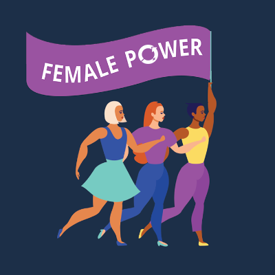
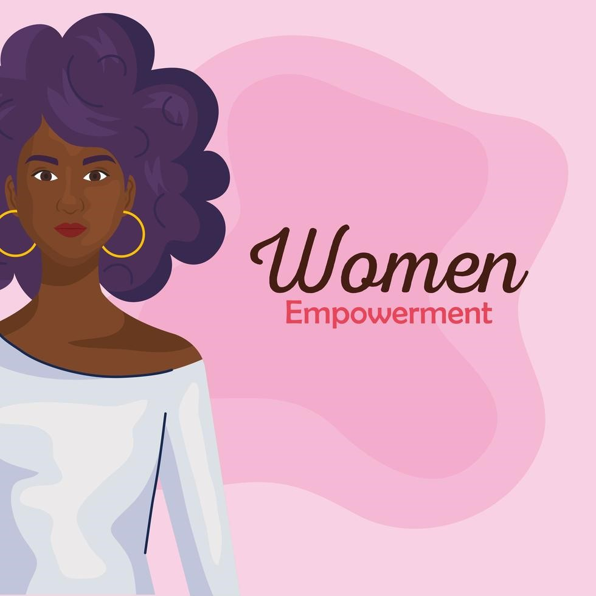
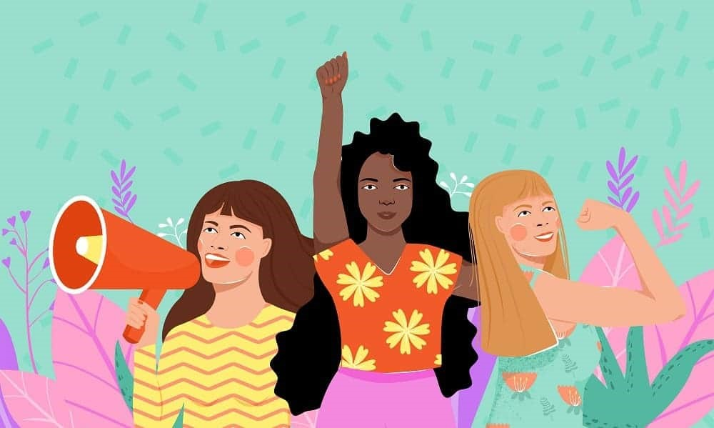
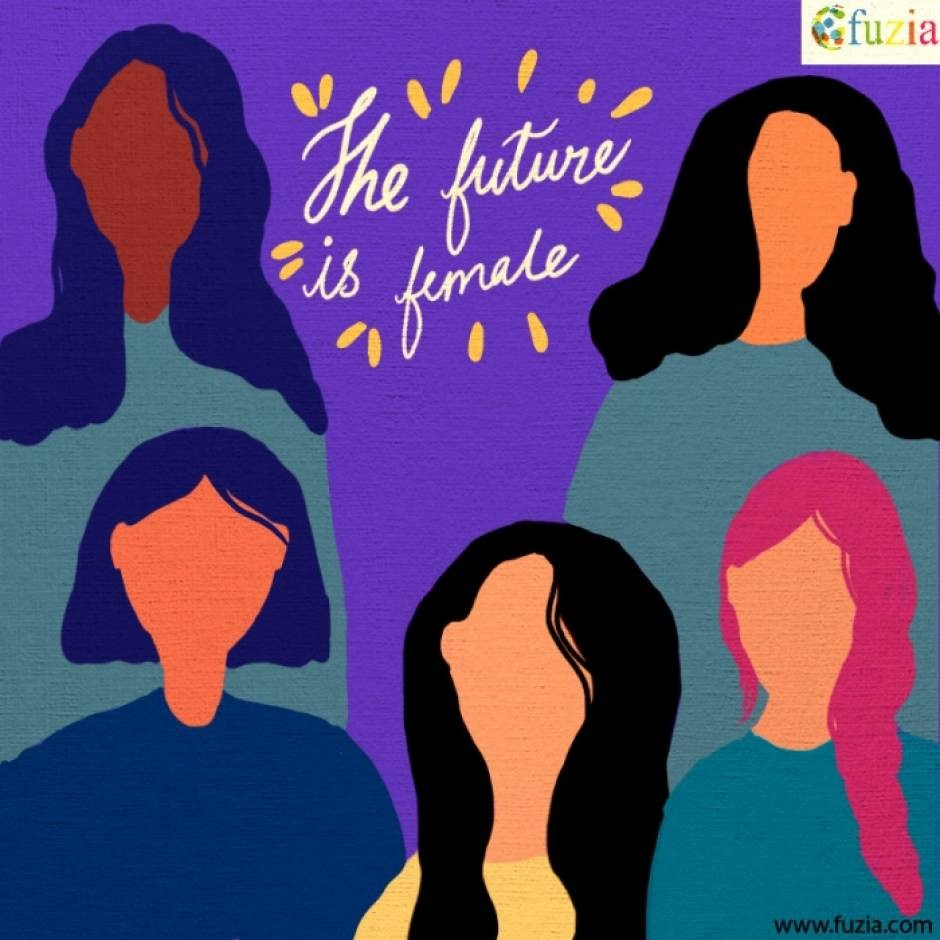

Who runs the world? Girls!
Women Empowerment and it's role in crushing gender-based stereotypes



Women are the backbone of our Nation.
Over the past decades, there has been a steady increase in women's empowerment. Women must possess self-worth, confidence, and freedom to choose their needs and requirements. Classifying people based on gender is unreasonable and biased. Still, women are paid less, expected to cook and are restricted by their family members. To overcome these situations and to have an independent role in society, women's empowerment is crucial.
Unemployment is one of the common problems that can be seen in the developing society. The research says that half of the population consists of women. Unemployment of women and unequal opportunities in the place of work can be eradicated with the help of women empowerment. Whenever women are facing unemployment, their true potential is left untapped. To make use of the strength and potential of the women, they must be provided with equal opportunities.
It is impossible to realize and understand the women by looking at them. You can predict their intelligence level by their way of approaching the problems and in the solution finding. In the modern era, women are well versed in solving technical problems. In these cases, women's empowerment plays a vital role. This is because, without women empowerment, we will not realise the true potential of women. Thus making the presence in the work environment is extremely important and advantageous.
From this we can ascertain the importance of women in modern day society and we can work together as a nation to overcome Gender-Based stereotypes and empower women to do great things!

To have a look at some influencial women from our society
click me